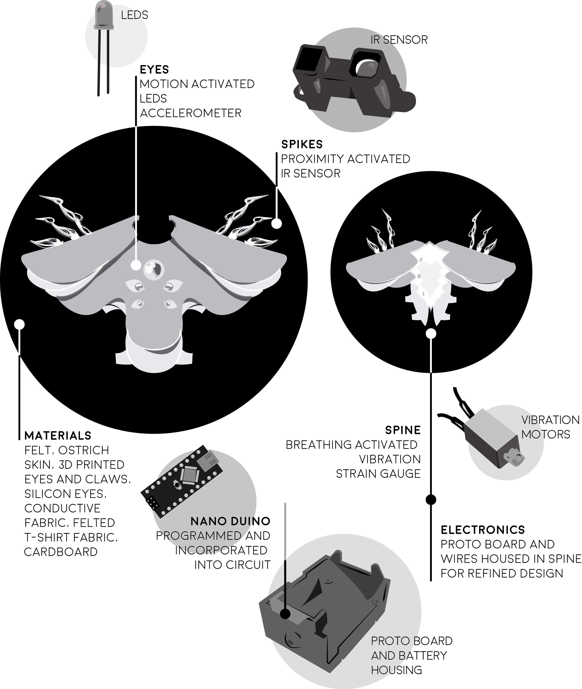

Final Product
What We Created
Summary
We created a wearable that senses breathing, motion, and proximity to other people. It uses this data to interact with the wearer and surrounding people through lights, vibration along the wearer's spine, and actuation of the shoulder spikes.
Overall System Diagram
